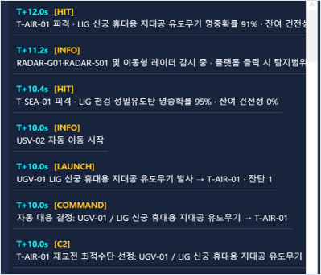
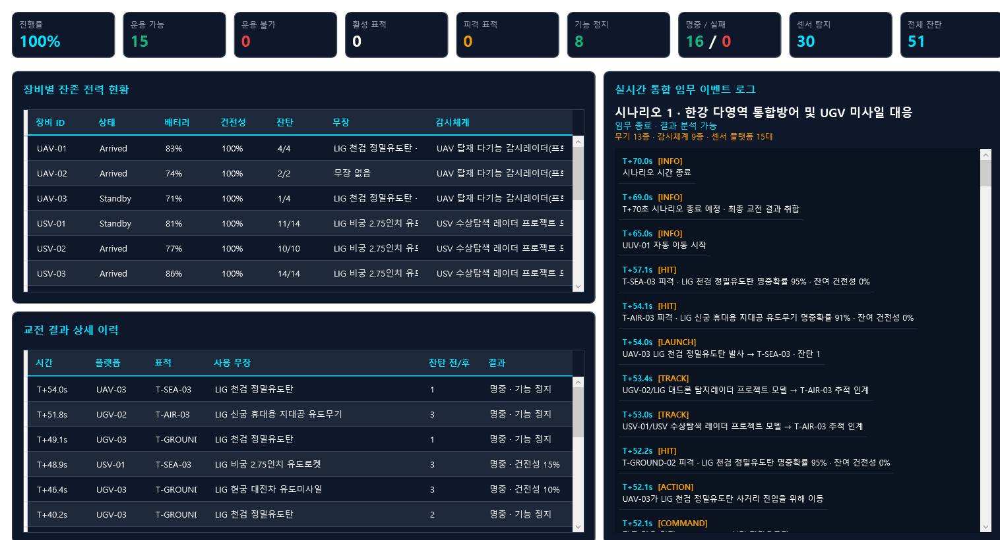
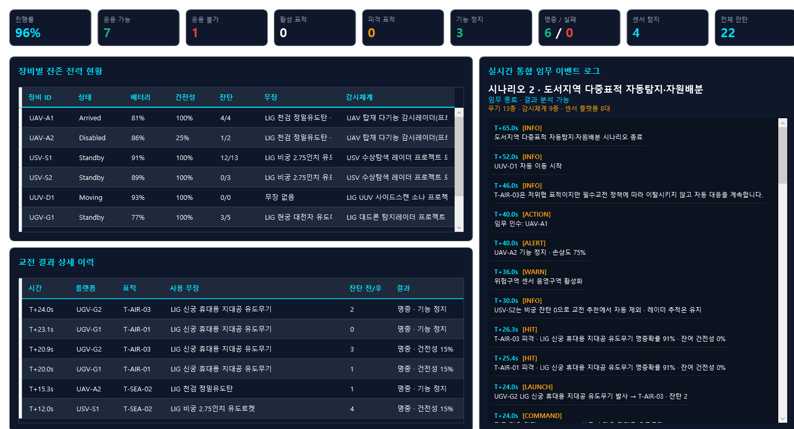
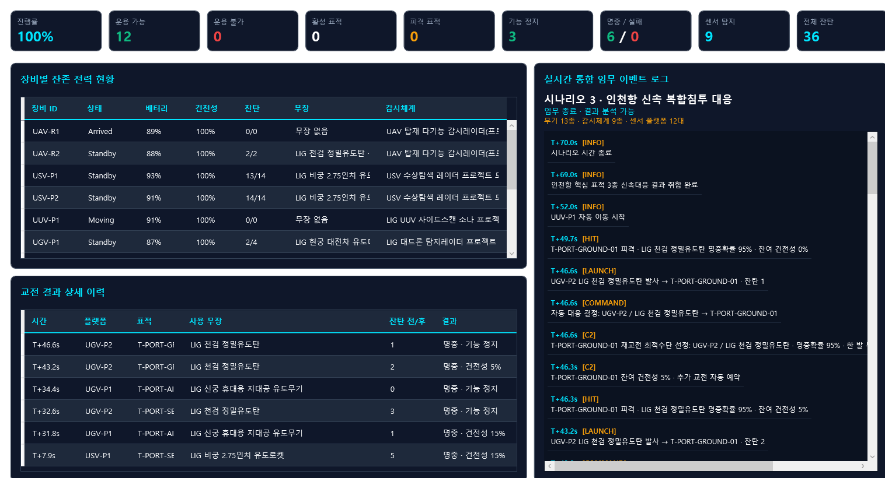

SYSTEM SOFTWARE, COMMAND AND CONTROL
MOSAIC C2: command-and-control simulator for multi-domain unmanned systems
MOSAIC C2 (Command and Control) brings detection, countermeasure recommendation, maneuver, engagement and re-engagement for air, surface, underwater and ground unmanned systems into one WPF simulator. Scenarios live in external JSON, separate from the execution logic, and decisions are re-run when communication status or available assets change.
3 SCENARIOSRun automatically
with no operator input
with no operator input
- Period
- 2026.07.17–2026.07.24
- Context
- Mini project, The SSEN program
- My role
- Lead of a four-person team / system architecture, automatic response logic, scenario design
- Stack
- C#, WPF, MVVM, JSON

01 / SYSTEM
System architecture and my scope
Assets, sensors, weapons and scenarios are defined in external JSON, and the simulation engine updates their state over time. When a detection arrives, the engine evaluates available platforms and weapons, issues a command, and carries the engagement through projectile flight and hit assessment.
- Simulation engineTime steps, asset movement, detection, engagement and damage updates
- Countermeasure recommendationChecks domain, range, remaining rounds, communication status and threat level
- Data separationWeapons, sensors, platforms and scenarios managed in external JSON
- Operator screensMap, selected-asset specifications, engagement summary and event log kept in sync
02 / WPF EVIDENCE
Automatic response from detection to re-engagement

Re-engaging when a target survives the first hit
The sequence the engine ran for surface target T-SEA-01, from detection to neutralization.
- Target detectedThe UAV-02 radar detects the surface target
- Automatic command and launchUSV-01 is selected and fires a Bigung guided rocket
- First hitThe target keeps 15% health, so a follow-up engagement is scheduled
- Countermeasure re-selectedAll available options are re-evaluated and the UAV-03 Cheongeom precision-guided missile is chosen
- Target neutralizedThe re-engagement hits and remaining health drops to 0%
03 / SIMULATION
Representative operator screens and runs
USVs and UUVs on the Han River channel, UGVs on roads and UAVs in the air move along domain-specific routes. The recordings show radar detection, automatic commands, projectile flight, hits and re-engagement, and each ends with the results screen for that run.
04 / MODELING
Weapon and sensor specifications as runtime parameters
Based on public specifications of LIG guided weapons and surveillance systems, range, hit probability, remaining rounds and engageable domains are modeled as JSON properties. Radar coverage was set to approximate values scaled to the scenarios, so the map display and the recommendation logic read the same data.
These results come from public specifications and the simulation conditions set in the project. They do not represent the performance of real weapon systems.
05 / DECISION
Re-deciding when the situation changes
Separate communication layers
Platform communication feeds the recommendation, while the command link decides when a command is held or resent.
Re-evaluation for re-engagement
Instead of sticking with the previous platform, the logic re-evaluates the surviving target’s health and every available option.
Domain-constrained movement
UAVs fly straight lines, USVs and UUVs follow waterways, and UGVs follow the road network.
Pre-run validation
ID uniqueness, reference consistency, coordinate ranges, route-network domains and screen structure are checked before each run.
06 / RESULT
Validation results
In the Incheon Port scenario, automatic response resumed after the command link was restored. The restoration point appears at 13.2 s in the operator-screen recording.
3
Scenarios run automatically from detection to mission end
Each ran on the same code and scenario JSON, and targets, engagements and remaining assets were checked at the end of each run.
| Scenario | End time | Detection alerts | Hits / misses | Targets neutralized | Active targets |
|---|---|---|---|---|---|
| Han River defense | 70 s | 30 | 16 / 0 | 8 | 0 |
| Island multi-target | 65 s | 4 | 6 / 0 | 3 | 0 |
| Incheon Port infiltration | 70 s | 9 | 6 / 0 | 3 | 0 |
Detection alerts count sensor detection records, not unique targets. Hit counts include re-engagements to remove remaining health. The figures are run results under the hit and re-engagement conditions set in each scenario.
01 Han River defense, results screen

02 Island multi-target, results screen

03 Incheon Port infiltration, results screen
